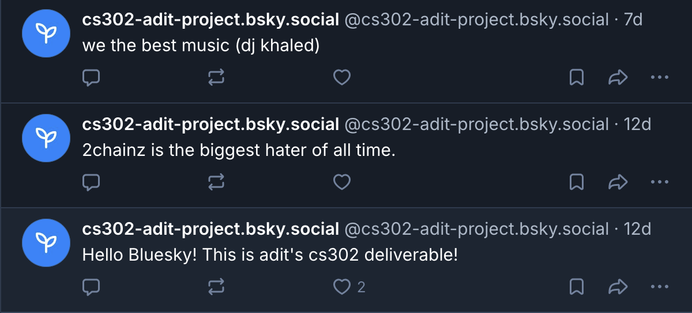
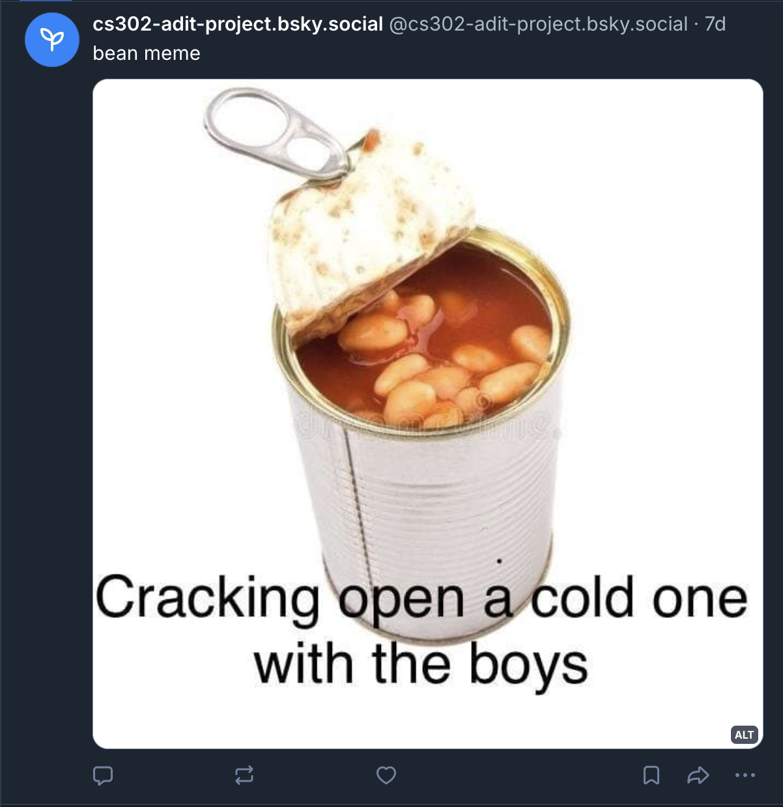
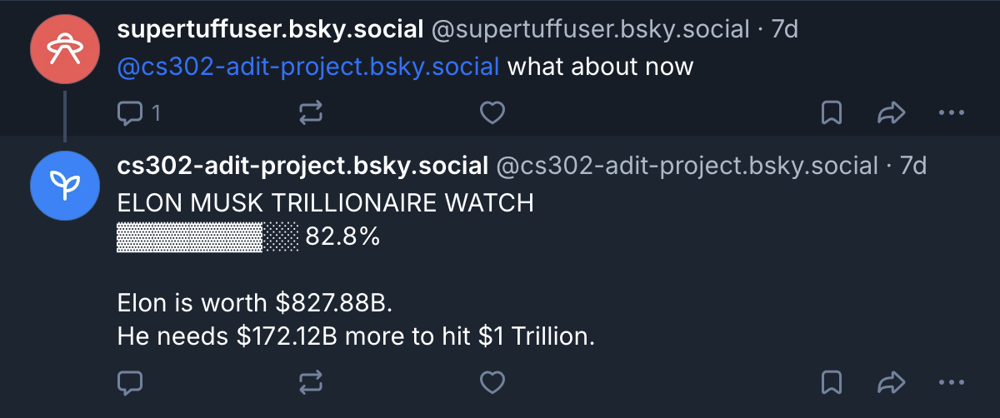

social media X ethics

This deliverable involved writing a social media bot for Bluesky using the Authenticated Transfer Protocol (ATP or atproto). ATP is a decentralised social media protocol and allows publishing and distribution of data on social media platforms.
The bot I wrote can be found here. At the most basic level (literally 3 lines of python), the bot can make a text post. My favourite kinds of posts online are vague, meme-y posts, and so I tried emulating that for my test text posts.

The second level of functionality (still just a few lines of code) allows the bot to post images. Keeping with the theme of vague meme image, I made my bot post an outdated meme.

Finally, the most exciting and bot-like functionality that my bot has is the reply function. When my bot is mentioned (@'ed) in a post or reply, it will reply to that with information on Elon Musk's wealth, specifically, how far he is from a net worth of $1 trillion. The bot uses the yfinance package, that allows scraping information from Yahoo! Finance. This combines both the user interaction metric and the external package metric into a cohesive function of the bot.

For the basic text and image functionalities of the bot, atproto's python library provides very convenient, syntax-sugared functions. Once the bot is declared an instance of the Client class and is logged in, the code for making a post is as simple as saying
def make_text_post(text): client.send_post(text)
def make_img_post(img, caption, alt_text): with open(img, 'rb') as f: img_data = f.read() aspect_ratio = models.AppBskyEmbedDefs.AspectRatio(height=100, width=100) client.send_image( text=caption, image=img_data, image_alt=alt_text, image_aspect_ratio=aspect_ratio )